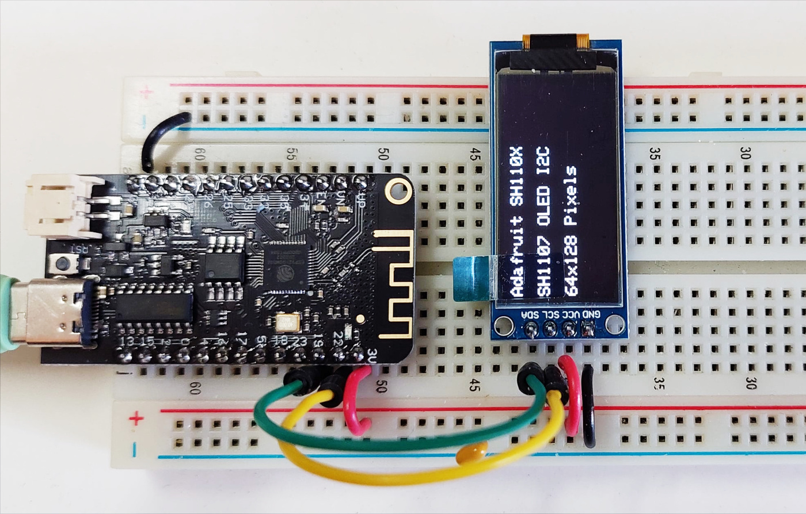
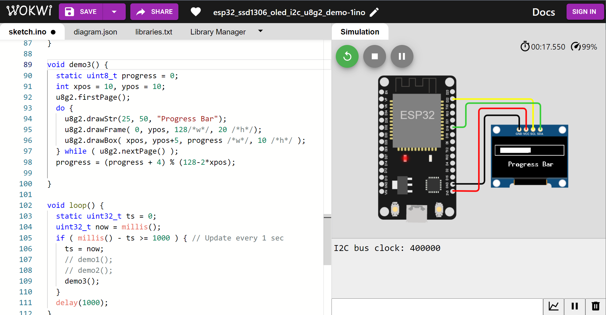

การใช้งานโมดูลแสดงผลที่มีจอภาพ OLED#
▷ OLED Displays#
โมดูลที่สามารถนำมาใช้ในการแสดงผลเป็นข้อความหรือเชิงกราฟิก สำหรับบอร์ดไมโครคอนโทรลเลอร์ มีให้เลือกใช้หลายแบบ ประเภทที่ได้รับความนิยมประเภทหนึ่งคือ จอแสดงผล OLED (Organic Light-Emitting Diode) แบบ Dot-Matrix Display ที่ใช้พลังงานต่ำและให้ภาพคมชัดกว่าจอ LCD ทั่วไป และมาพร้อมกับชิปควบคุม (Display Controller Chip)
การเลือกจอแสดงผล OLED ขนาดเล็ก มีข้อดีคือ ราคาถูกกว่า และใช้หน่วยความจำของไมโครคอนโทรลเลอร์ในการประมวลผลน้อยกว่า สามารถโปรแกรมเลือกสี (Display Colors) แต่ละพิกเซลได้เพียงหนึ่งหรือสองสีเท่านั้น เช่น สีขาวหรือสีน้ำเงินและมีพื้นหลังเป็นสีดำ หรือบางกรณีเป็นแบบสองสี (Bi-color) เช่น สีน้ำเงิน-เหลือง โดยแบ่ง 1/4 ของความสูงบนหน้าจอเป็นสีเหลือง และอีก 3/4 เป็นสีน้ำเงิน
รูป: โมดูล 0.96" OLED (4-Pin, I2C)
รูป: โมดูล 1.3" OLED (7-Pin, SPI)
ในปัจจุบัน ก็มีตัวอย่างของชิปควบคุมสำหรับ OLED เช่น SSD1306, SSD1315, SH1106 และ SH1107 เป็นต้น มักใช้กับโมดูลหรือจอที่มีขนาดเล็กตามจำนวนของพิกเซล (กว้าง x สูง) เช่น 64x32, 128x32, 128x64 และ 128x128 เป็นต้น หรือมีจอภาพวัดความยาวในแนวทแยงมุม เช่น 0.96" และ 1.3" เป็นต้น
ชิปควบคุม เช่น SSD1306 ทำงานด้วยแรงดันไฟเลี้ยง (Logic Supply Voltage หรือ VDD) ในช่วง 1.65V ~ 3.3V แต่ส่วนที่เป็นแผงจอ OLED จะใช้แรงดันไฟเลี้ยงที่มีระดับสูงกว่า VDD (เรียกว่า Panel Driving Voltage: VPP) เช่น ในช่วง 7V ~ 15V โดยใช้วงจร Boost DC-DC Converter อย่างเช่น ไอซี LT1308 หรือ HM1308 แต่ชิปควบคุมก็มีวงจรสร้างแรงดันไฟเลี้ยงอยู่ภายในด้วย (เช่น เรียกว่า Internal VPP Generator หรือ Charge Pump / Switching Capacitor Regulator)
ชิปควบคุมมีหน่วยความจำภายใน เรียกว่า Graphic Display Data RAM (GDDRAM) หรือ SRAM Display Buffer สำหรับเก็บข้อมูลเพื่อนำไปใช้แสดงผลเชิงกราฟิกบนจอภาพ โดยทั่วไป ในกรณีของชิปควบคุม SSD1306 ก็มีขนาด 1024 ไบต์ (1KB) สำหรับจอขนาด 128 × 64 พิกเซล โดยแบ่งความสูงของจอภาพได้เป็น 8 ส่วนตามแนวนอน หรือ แถบแนวนอน (เรียกว่า Pages) แต่ละส่วนประกอบด้วย 128 คอลัมน์ (Columns หรือ Segments) และหนึ่งคอลัมน์จะมีหน่วยความจำเท่ากับ 8 บิต (1 ไบต์) ใช้หนึ่งบิตสำหรับหนึ่งพิกเซล ถ้าจอแสดงผล OLED มีขนาด 128 × 32 พิกเซล ก็จะมีเพียง 4 ส่วน
ในกรณีของชิปควบคุม SH1107 ก็มีขนาด 2048 ไบต์ (2KB) สำหรับจอขนาดสูงสุด 128 × 128 พิกเซล
รูป: ผังแสดงองค์ประกอบภายในของ SH1107
การเชื่อมต่อกับชิปควบคุม เพื่อส่งคำสั่งตั้งค่าการใช้งาน และเขียนข้อมูลลงในหน่วยความจำ GDDRAM มีให้เลือกได้หลายวิธี แต่มีอยู่ 2 วิธีที่ใช้งานบ่อย ได้แก่ การเชื่อมต่อด้วยบัส I2C (ความเร็วสูงสุด 400kHz) และการเชื่อมต่อแบบบัส SPI
ดังนั้นเวลาเลือกใช้งาน จะต้องดูก่อนว่า โมดูล OLED มีรูปแบบการเชื่อมต่อเป็นแบบไหน
โดยทั่วไป ก็จะเลือกใช้โมดูลแบบ Breakout Board
ที่มี 4 ขา ซึ่งเชื่อมต่อแบบ I2C (มีแอดเดรสเป็น 0x3C หรือ 0x3D) ดังนี้
- GND: ขากราวด์ (Ground) ของวงจร
- VCC: ขาแรงดันไฟเลี้ยง (Voltage Supply) ในช่วง 3.3V ~ 5V และมีวงจรหรือไอซีควบคุมแรงดันไฟเลี้ยง เช่น ไอซี 662K-3.3V หรือ XC6206-3.3V
- SCL: ขาสัญญาณ Clock ของบัส I2C
- SDA: ขาสัญญาณ Data ของบัส I2C
โดยทั่วไปแล้วก็จะมีตัวต้านทาน Pullup เช่น ขนาด 4.7k ต่อไว้ที่ขา SDA และ SCL อย่างละหนึ่งตัว
ในกรณีที่เชื่อมต่อแบบบัส SPI ก็มีขาทั้งหมด 7 ขาของโมดูลดังนี้
- GND: ขากราวด์ (Ground) ของวงจร
- VCC: ขาแรงดันไฟเลี้ยง (Voltage Supply) มีวงจรควบคุมแรงดันไฟเลี้ยงสำหรับ 3.3V ~ 5V
- SCLK / D0: ขาสัญญาณ Clock เพื่อกำหนดจังหวะการทำงานและสื่อสารข้อมูล
- MOSI / D1: ขาสำหรับการสื่อสารข้อมูลระหว่างไมโครคอนโทรลเลอร์กับโมดูล OLED
- RES: ขารีเซตการทำงานของโมดูล
- D/C: ขาที่ใช้ระบุว่า สัญญาณ MOSI ที่ถูกส่งไปยังโมดูล OLED เป็นข้อมูล (DATA) หรือ คำสั่ง (CMD)
- CS: ขา Chip Select สำหรับโมดูล OLED
รูป: โมดูล OLED ที่ใช้ชิป SH1107 ขนาด 1.5", 1.3" และ 0.96"
รูป: โมดูล GME64128 — 1.3" OLED, White Color, 64x128 Pixels, I2C, SH1107 Driver, 662K-3.3V LDO, Boost DC-DC Converter for VPP
รูป: โมดูล GME64128 — 0.96" OLED, White Color, 64x128 Pixels, I2C, SH1107 Driver, 662K-3.3V LDO, Boost DC-DC Converter for VPP
สำหรับการเขียนโปรแกรมไมโครคอนโทรลเลอร์เพื่อใช้งานร่วมกับโมดูล OLED ก็แนะนำให้เลือกใช้ไลบรารี เช่น ไลบรารีที่ได้พัฒนาโดยบริษัท Adafruit และไลบรารี U8g2 เป็นต้น
▷ การใช้ไลบรารี Adafruit SH110X#
บริษัท Adafruit ได้พัฒนาไลบรารีสำหรับการเขียนโปรแกรม Arduino และใช้งานสำหรับโมดูล OLED ได้หลายรุ่นหลายแบบ จำแนกตามชิปควบคุมที่ใช้งาน เช่น
- Adafruit GFX Library: เป็นไลบารีที่มีคำสั่งสำหรับการวาดรูปกราฟิกหรือแสดงข้อความบนหน้าจอ OLED
- Adafruit SSD1306 Library: เป็นไลบรารีสำหรับโมดูล OLED แบบสีขาวดำ (Monochrome) ที่ใช้ชิปควบคุม SSD1306
- Adafruit SH110X Library: เป็นไลบรารีสำหรับโมดูล OLED แบบสีขาวดำที่ใช้ชิปควบคุม SH1106 หรือ SH1107
ถ้าต้องการจะใช้งานไลบรารีร่วมกับ Arduino IDE จะต้องมีการติดตั้งก่อน
โดยไปที่เมนู Sketch > Include Library > Manage Libraries
สำหรับ Arduino Library Manager
แล้วค้นหาคำว่า Adafruit SSD1306 Adafruit SH110X และ Adafruit GFX แล้วคลิกเลือกติดตั้งตามลำดับ
รูป: การติดตั้งไลบรารี Adafruit SH110X
รูป: การติดตั้งไลบรารี Adafruit GFX สำหรับใช้ร่วมกับไลบรารี Adafruit SH110X
ตัวอย่างโค้ดสาธิตการใช้งานไลบรารี Adafruit SH110X สำหรับโมดูล OLED (I2C) ขนาด 128 x 64 พิกเซล และเขียนโปรแกรมด้วย Arduino ESP32 และ Arduino Nano มีดังนี้
ในโค้ดตัวอย่างได้เลือกใช้ขา 19/22 ของ ESP32 และ A4/A5 ของ Uno / Nano สำหรับ SDA/SCL pins
// Date: 2022-12-20
#include <Wire.h>
#include <Adafruit_GFX.h>
// https://github.com/adafruit/Adafruit-GFX-Library/
#include <Adafruit_SH110X.h>
// https://github.com/adafruit/Adafruit_SH110x/
#if defined(ESP32)
#define I2C_SCL_PIN (22)
#define I2C_SDA_PIN (19)
#endif
// Note: For Arduino Uno or Nano, A4/A5 pins are used as the SDA/SCL pins.
#define OLED_I2C_ADDR (0x3C) // The 7-bit I2C address of the OLED module
#define OLED_WIDTH (64) // OLED display width (in pixels)
#define OLED_HEIGHT (128) // OLED display height (in pixels)
#define OLED_RESET (-1) // No reset pin
#define WHITE_COLOR (SH110X_WHITE)
Adafruit_SH1107 oled( OLED_WIDTH, OLED_HEIGHT, &Wire, OLED_RESET );
void setup() {
Serial.begin( 115200 );
#if defined(ESP32)
Wire.begin( I2C_SDA_PIN, I2C_SCL_PIN );
#endif
// Set I2C clock speed to 400kHz
Wire.setClock( 400000 );
// Initialize the OLED display
if ( !oled.begin( OLED_I2C_ADDR, true ) ) {
Serial.println( F("OLED init failed!!!") );
}
// Set the display orientation (0..3)
oled.setRotation( 1 );
// Clear display buffer
oled.clearDisplay();
// Set text color to white
oled.setTextColor( WHITE_COLOR );
// Update the display
oled.display();
}
#define NUM_LINES (6)
#define VERTICAL_SPACING (10)
void demo1() {
// Clear the display
oled.clearDisplay();
// Set the text size
oled.setTextSize( 1 );
// Set cursor positions and write texts to display buffer
oled.setCursor( 0, 4 );
oled.println( "Adafruit SH110X" );
oled.setCursor( 0, 20 );
oled.println( "SH1107 OLED I2C" );
oled.setCursor( 0, 36 );
oled.println( "64x128 Pixels" );
// Update the display
oled.display();
}
void demo2() {
static char sbuf[32];
// Clear the display
oled.clearDisplay();
// Set the text size
oled.setTextSize( 1 );
// Draw a rectangular frame
oled.drawRect( 0, 0, oled.width()-1, oled.height()-1, WHITE_COLOR );
int x=5, y=2;
for ( int i=0; i < NUM_LINES; i++ ) {
oled.setCursor( x, y );
y += VERTICAL_SPACING;
snprintf( sbuf, 32, "Line #%d:__________", (i+1) );
oled.println( sbuf );
}
// Update the display
oled.display();
}
void loop() {
demo1();
delay(2000);
demo2();
delay(2000);
}
รูป: ตัวอย่างการต่อวงจรบนเบรดบอร์ด โดยใช้บอร์ด Arduino Nano v3 และ OLED (SH1107) ใช้แรงดันไฟเลี้ยง VCC=+5V และขา A4/A5 สำหรับ SDA/SCL

รูป: ตัวอย่างการต่อวงจรบนเบรดบอร์ด โดยใช้บอร์ด WeMos Lolin32 Lite และ OLED (SH1107) ใช้แรงดันไฟเลี้ยง VCC=+3.3V
▷ การใช้ไลบรารี U8g2 สำหรับ OLED (I2C)#
อีกไลบรารีสำหรับการเขียนโปรแกรม Arduino ที่สามารถนำมาใช้กับโมดูล OLED คือ U8g2 (Universal 8-bit Graphics Library V2) ซึ่งพัฒนาโดย Oliver Kraus คำสั่งต่าง ๆ เกี่ยวกับการใช้งาน U8g2 Library สามารถดูได้จาก "U8g2 Reference"
ถ้าต้องการจะใช้งานไลบรารีนี้ร่วมกับ Arduino IDE จะต้องมีการติดตั้งก่อน
โดยไปที่เมนู Sketch > Include Library > Manage Libraries
สำหรับ Arduino Library Manager
แล้วค้นหาคำว่า U8g2 แล้วคลิกเลือกติดตั้ง
รูป: การติดตั้งไลบรารี U8g2 สำหรับ Arduino IDE
ตัวอย่างโค้ดสาธิตมีดังนี้ ซึ่งมีการใช้คลาสที่มีชื่อว่า U8G2_SH1107_64X128_F_HW_I2C
(ประกาศไว้ในไฟล์ U8g2lib.h)
สำหรับการใช้งานโมดูล OLED ที่มีชิปควบคุมเป็น SH1107 และสื่อสารด้วยบัส I2C
U8G2_SH1107_64X128_F_HW_I2C u8g2(
U8G2_R1 /*rotation 90 deg.*/,
NO_RESET_PIN /*reset pin*/
);
ถ้าใช้โมดูล OLED (SH1107) ขนาด 128 x 128 ก็ให้ลองใช้คลาส
U8G2_SH1107_128X128_F_HW_I2C ตามตัวอย่างต่อไปนี้
U8G2_SH1107_128X128_F_HW_I2C u8g2(
U8G2_R1 /*rotation 90 deg.*/,
NO_RESET_PIN /*reset pin*/
);
ถ้าใช้โมดูล OLED (SSD1306) ขนาด 128 x 64 ก็ให้ลองใช้คลาส
U8G2_SSD1306_128X64_NONAME_F_HW_I2C ตามตัวอย่างต่อไปนี้
U8G2_SSD1306_128X64_NONAME_F_HW_I2C u8g2(
U8G2_R2 /*180 deg. rotation */,
NO_RESET_PIN /*reset pin*/
);
ถ้าเป็นโมดูล 0.91" 128x32 OLED
ให้ลองใช้คลาส U8G2_SSD1306_128X32_UNIVISION_F_HW_I2C
ตามตัวอย่างต่อไปนี้
U8G2_SSD1306_128X32_UNIVISION_F_HW_I2C u8g2(
U8G2_R0 /* no rotation */,
NO_RESET_PIN /*reset pin*/
);
ถ้าเป็นโมดูล 0.66" 64x48 SSD1306 OLED - WeMos D1 Mini Shield
(ขา D1/D2 ตรงกับ SCL/SDA)
แนะนำให้ใช้คลาส U8G2_SSD1306_64X48_ER_F_HW_I2C ตามตัวอย่างต่อไปนี้
U8G2_SSD1306_64X48_ER_F_HW_I2C u8g2(
U8G2_R0 /* no rotation */,
NO_RESET_PIN /*reset pin*/
);
และรายการชื่อฟอนต์ที่สามารถใช้ได้กับ U8g2 ดูได้จาก "Font List All"
#include <Wire.h>
#include <U8g2lib.h> // https://github.com/olikraus/u8g2
// https://github.com/olikraus/u8g2/wiki/u8g2setupcpp
#if defined (ESP32)
#define I2C_SDA_PIN (19)
#define I2C_SCL_PIN (22)
#endif
#define OLED_I2C_ADDR (0x3C)
#define NO_RESET_PIN (U8X8_PIN_NONE) // No reset pin
#define U8G2_FONT (u8g2_font_7x13B_tf)
// see font list -> https://github.com/olikraus/u8g2/wiki/fntlistall
// Define the OLED display and the SH1107 driver
// Use full framebuffer, Hardware I2C interfacing
U8G2_SH1107_64X128_F_HW_I2C u8g2(
U8G2_R1 /*rotation 90 deg.*/,
NO_RESET_PIN /*reset pin*/
);
void setup() {
Serial.begin(115200);
// Initialize the I2C master
#if defined (ESP32)
Wire.begin(I2C_SDA_PIN, I2C_SCL_PIN);
#else
Wire.begin();
#endif
// Set SH1107 device address
u8g2.setI2CAddress(OLED_I2C_ADDR << 1);
// Set I2C bus clock
u8g2.setBusClock(400000);
// Show I2C bus clock speed;
Serial.print( "I2C bus clock: " );
Serial.println( u8g2.getBusClock( ) );
// Initialize the OLED display
u8g2.begin();
// Set the font and font size
u8g2.setFont(U8G2_FONT);
}
void demo() {
// Clear the display buffer
u8g2.clearBuffer();
// Draw text lines on the display buffer
u8g2.setCursor(0, 15);
u8g2.print("I2C OLED SH1107");
u8g2.drawStr(0, 30, "64x128 pixels");
u8g2.drawStr(0, 45, "SH1107 (0x3C)");
u8g2.drawStr(0, 60, "Arduino + U8G2");
// Send the display buffer to the OLED display
u8g2.sendBuffer();
}
void loop() {
demo();
delay(1000);
}
รูป: การสาธิตการทำงานของโค้ดตัวอย่างเมื่อใช้ไลบรารี U8g2 โดยใช้บอร์ด Arduino Nano v3 และ OLED (SH1107)

รูป: การสาธิตการทำงานของโค้ดตัวอย่างเมื่อใช้ไลบรารี U8g2 โดยใช้บอร์ด WeMos Lolin32 Lite และ OLED (SH1107, 64x128 pixels)
รูป: การสาธิตการทำงานของโค้ดตัวอย่างเมื่อใช้ไลบรารี U8g2 โดยใช้บอร์ด WeMos Lolin32 Lite และโมดูล OLED (SH1107, 128x128 pixels)
รูป: บอร์ด WeMos Lolin32 Lite และโมดูล OLED (SSD1306, 128x64 pixels)
รูป: บอร์ด WeMos Lolin32 Lite และโมดูล WeMos D1 Mini OLED Shield (SSD1306, 64x48 pixels)
รูป: บอร์ด WeMos Lolin32 Lite และโมดูล OLED (SSD1306, 128X32 pixels)
▷ การใช้ไลบรารี U8g2 สำหรับ OLED (SPI)#
ถ้าเป็นโมดูล SSD1306 (128x64 pixels) และเชื่อมต่อแบบ SPI ก็มีตัวอย่างโค้ดเพื่อทดลองใช้กับบอร์ด ESP32 ดังนี้
ในตัวอย่างนี้ได้เลือกใช้ขา Hardware VSPI ของ ESP32 ซึ่งมีขา SCLK ตรงกับ GPIO18 ขา MOSI ตรงกับ GPIO23 และได้เลือกใช้ขา GPIO5 สำหรับขา CS และขา GPIO17 สำหรับขา DC ตามลำดับ ส่วนขา RES (รีเซต) ไม่ได้ต่อใช้งาน แต่ต่อกับตัวต้านทานแบบ Pullup ไปยัง 3.3V
การทำงานของ OLED ในส่วนที่เกี่ยวข้องกับ Screen Buffer มีสองตัวเลือกในตัวอย่างนี้ คือ
- Full Frame Buffer: อัปเดตจอภาพได้เร็วกว่า แต่ใช้หน่วยความจำมากกว่า
- Single Page Buffer: อัปเดตจอภาพได้ช้ากว่า เพราะจะต้องมีการแบ่งทำที่ละส่วน (Page wise) แต่ใช้หน่วยความจำน้อยกว่า
#include <SPI.h>
#include <U8g2lib.h> // https://github.com/olikraus/u8g2
// Hardware VSPI of ESP32
// SCLK = GPIO18
// MOSI = GPIO23
// MISO = GPIO19
#define OLED_SCLK (18)
#define OLED_MOSI (23)
#define OLED_CS (5)
#define OLED_DC (17)
#define OLED_RES (U8X8_PIN_NONE)
#define USE_FULLFRAME
#define U8G2_FONT (u8g_font_unifont)
// see font list -> https://github.com/olikraus/u8g2/wiki/fntlistall
#ifdef USE_FULLFRAME
// Use a full framebuffer
U8G2_SSD1306_128X64_NONAME_F_4W_SW_SPI u8g2(
U8G2_R2, OLED_SCLK, OLED_MOSI, OLED_CS, OLED_DC, OLED_RES );
#else
// Use a single buffer instead of full framebuffer
U8G2_SSD1306_128X64_NONAME_1_4W_SW_SPI u8g2(
U8G2_R2, OLED_SCLK, OLED_MOSI, OLED_CS, OLED_DC, OLED_RES );
#endif
void setup() {
Serial.begin(115200);
pinMode( OLED_CS, OUTPUT );
pinMode( OLED_DC, OUTPUT );
// Initial the U8g2 library
u8g2.begin();
// Set the font and font size
u8g2.setFont(U8G2_FONT);
// Set color to white
u8g2.setColorIndex(1);
}
void loop() {
static char sbuf[12];
static uint16_t count = 0;
static uint32_t ts = 0;
uint32_t now = millis();
if ( millis() - ts >= 1000 ) { // Update every 1 sec
ts = now;
sprintf( sbuf, "COUNT: %04d", count );
count = (count+1) % 10000;
// Get text width
int text_width = u8g2.getStrWidth(sbuf);
#ifdef USE_FULLFRAME
// Clear display
u8g2.clearBuffer();
// Draw text on the screen
u8g2.drawStr( 64-text_width/2, 30, sbuf );
// Update the display
u8g2.sendBuffer();
#else
// Start drawing the OLED on the first page
u8g2.firstPage();
do {
// Draw text on the screen
u8g2.drawStr( 64-text_width/2, 30, sbuf );
} while ( u8g2.nextPage() );
#endif
}
}
รูป: บอร์ด WeMos Lolin32 Lite และโมดูล OLED (SSD1306, SPI, 128X64 pixels)
▷ การจำลองการทำงานด้วย Wokwi Simulator#
ถัดไปเป็นตัวอย่างโค้ดที่สามารถนำไปทดลองใช้งานกับ Wokwi Simulator
โดยเลือกใช้บอร์ด ESP32 DevKit หรือ Arduino Nano ร่วมกับโมดูล SSD1306 I2C OLED
(board-ssd1306)
ร่วมกับไลบรารี U8g2 สำหรับการสาธิต
// Date: 2022-12-24
#include <Wire.h>
#include <U8g2lib.h> // https://github.com/olikraus/u8g2
#if defined (ESP32)
#define I2C_SDA_PIN (19)
#define I2C_SCL_PIN (22)
#endif
#define USE_FULLFRAME
#define OLED_I2C_ADDR (0x3C) // Default address
#define NO_RESET_PIN (U8X8_PIN_NONE) // No reset pin
#define U8G2_FONT (u8g2_font_7x13B_tf)
#ifdef USE_FULLFRAME
// Use a full framebuffer
U8G2_SSD1306_128X64_NONAME_F_HW_I2C u8g2(
U8G2_R0, NO_RESET_PIN );
#else
// Use a single buffer instead of full framebuffer
U8G2_SSD1306_128X64_NONAME_1_HW_I2C u8g2(
U8G2_R0, NO_RESET_PIN );
#endif
void setup() {
Serial.begin(115200);
// Initialize the I2C master
#if defined (ESP32)
Wire.begin(I2C_SDA_PIN, I2C_SCL_PIN);
#else
Wire.begin();
#endif
// Set OLED device address
u8g2.setI2CAddress(OLED_I2C_ADDR << 1);
// Set I2C bus clock
u8g2.setBusClock(400000);
// Show I2C bus clock speed
Serial.print( "I2C bus clock: " );
Serial.println( u8g2.getBusClock( ) );
// Initialize the OLED display
u8g2.begin();
// Set the font and font size
u8g2.setFont(U8G2_FONT);
}
void demo1() { // note: This requires a full framebuffer.
// Clear the display buffer
u8g2.clearBuffer();
// Draw text lines on the display buffer
u8g2.setCursor(0, 15);
u8g2.print("I2C OLED");
u8g2.drawStr(0, 30, "128x64 pixels");
u8g2.drawStr(0, 45, "SSD1306 (0x3C)");
u8g2.drawStr(0, 60, "Arduino + U8G2");
// Send the display buffer to the OLED display
u8g2.sendBuffer();
}
void demo2() {
static char sbuf[12];
static uint16_t count = 0;
sprintf( sbuf, "COUNT: %04d", count );
count = (count+1) % 10000;
// Get display width
int disp_width = u8g2.getDisplayWidth();
// Get text width
int text_width = u8g2.getStrWidth(sbuf);
#ifdef USE_FULLFRAME
// Clear display
u8g2.clearBuffer();
// Draw text on the screen
u8g2.drawStr( (disp_width-text_width)/2, 32, sbuf );
// Update the display
u8g2.sendBuffer();
#else
// Start drawing the OLED on the first page
u8g2.firstPage();
do {
// Draw text on the screen
u8g2.drawStr( (disp_width-text_width)/2, 32, sbuf );
} while ( u8g2.nextPage() );
#endif
}
void demo3() {
static uint8_t progress = 0;
int xpos = 10, ypos = 10;
u8g2.firstPage();
do {
u8g2.drawStr(25, 50, "Progress Bar");
u8g2.drawFrame( 0, ypos, 128/*w*/, 20 /*h*/);
u8g2.drawBox( xpos, ypos+5, progress /*w*/, 10 /*h*/ );
} while ( u8g2.nextPage() );
progress = (progress + 4) % (128-2*xpos);
}
void loop() {
static uint32_t ts = 0;
uint32_t now = millis();
if ( millis() - ts >= 1000 ) { // Update every 1 sec
ts = now;
// demo1();
// demo2();
demo3();
}
delay(1000);
}

รูป: การต่อวงจรเสมือนจริงและจำลองการทำงานของโค้ดด้วย Wokwi Simulator (ESP32)
รูป: การต่อวงจรเสมือนจริงและจำลองการทำงานของโค้ดด้วย Wokwi Simulator (Arduino Nano)
▷ กล่าวสรุป#
บทความนี้ได้นำเสนอการใช้งานโมดูล OLED และการเขียนโปรแกรมด้วย Arduino ในเบื้องต้น และสาธิตวิธีการใช้งานร่วมกับบอร์ดไมโครคอนโทรลเลอร์ Arduino Nano v3 และ WeMos Lolin32 Lite
This work is licensed under a Creative Commons Attribution-ShareAlike 4.0 International License.
Created: 2022-12-20 | Last Updated: 2022-12-24